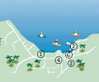
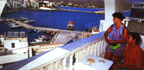

| Strand | 0 m | Restaurant | - | Etasjer | 4 |
| Supermarked | 200 m | Bar | Ja | Heis | Ja |
| Til buss | 800 m | TV-rom | Ja | Senger | 141 |
| Sentrum | 900 m | Salong | Ja | Tlf. i leil./rom | Ja |
| Basseng | Ja | Resepsjon | Ja | TV i leil./rom | - |
| Barnebass. | Ja | Deponering | Ja | Kjøleskap | - |
| Solterrasse | Ja | Elektrisitet | 220 v | Byggeår | 1990 |
Adr.: Karpathos, Pigadia, GR-85700 Karpathos.
Tlf.: 00 30 245/22 259. Fax: 00 30 245/22 212.
|
 | |||||
| Strand | 600 m | Restaurant | - | Etasjer | 3 |
| Supermarked | 400 m | Bar | - | Heis | - |
| Til buss | 400 m | TV-rom | - | Senger | 26 |
| Sentrum | 400 m | Salong | - | Tlf. i leil./rom | Ja |
| Basseng | - | Resepsjon | - | TV i leil./rom | - |
| Barnebass. | - | Deponering | - | Kjøleskap | Ja |
| Solterrasse | - | Elektrisitet | 220 v | Byggeår | 1993 |
Tlf.: 00 30 245/22 864.
Ingen fax.
Ingen resepsjonsservice, men eieren som bor ved anlegget kan oftest kontaktes. Byggestøy kan forekomme. Uegnet for folk med gangbesvær fordi hotellet ligger i en bakke. Da bussen ikke kan kjøre helt fram til hotellet, blir gjester og bagasje satt av ca. 200 m derfra. Hotellet transporterer bagasjen.
| Strand | 500 m | Restaurant | - | Etasjer | 5 |
| Supermarked | 200 m | Bar | Ja | Heis | Ja |
| Til buss | 300 m | TV-rom | Ja | Senger | 56 |
| Sentrum | 300 m | Salong | Ja | Tlf. i leil./rom | Ja |
| Basseng | - | Resepsjon | Ja | TV i leil./rom | - |
| Barnebass. | - | Deponering | Ja | Kjøleskap | Ja |
| Solterrasse | - | Elektrisitet | 220 v | Byggeår | 1989 |
Adr.: Andreas Hiotis Street,
GR-85700 Karpathos.
Tlf.: 00 30 245/22 652.
Rengjøring 6 ganger i uken. Resepsjonsservice på dagtid.
Trafikkstøy og støy fra nærliggende byggevirksomhet skal påregnes.
| Strand | 500 m | Restaurant | - | Etasjer | 4 |
| Supermarked | 100 m | Bar | Ja | Heis | Ja |
| Til buss | 100 m | TV-rom | Ja | Senger | 86 |
| Sentrum | 100 m | Salong | Ja | Tlf. i leil./rom | Ja |
| Basseng | - | Resepsjon | Ja | TV i leil./rom | - |
| Barnebass. | - | Deponering | Ja | Kjøleskap | - |
| Solterrasse | - | Elektrisitet | 220 v | Byggeår | 1991 |
Adr.: Pigadia,
GR-85700
Karpathos. Tlf.: 00 30 245/22 383.
Dessuten tlf. og fax: 00 30 245/22 144.
Noe støy fra folkelivet, samt noe trafikkstøy.
![[SN Horisont]](http://www.sn.no/img/horisont.gif)